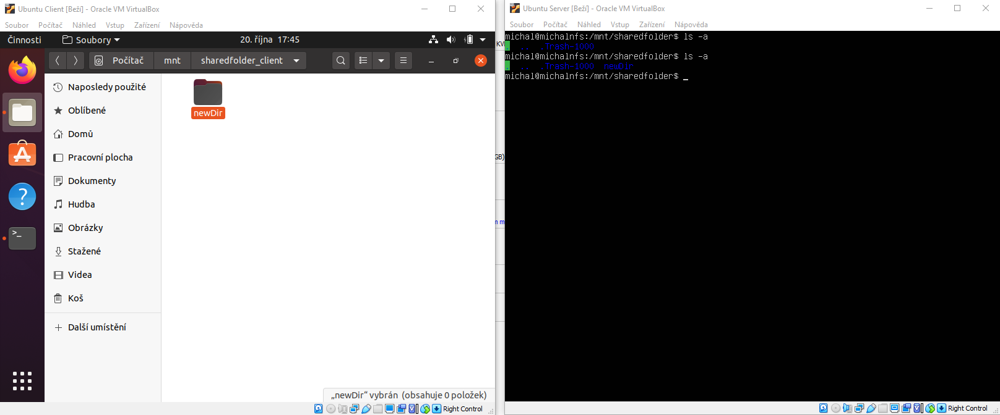

Síťové souborové systémy – NFS
21. 10. 2020
Obsah
- Úvod
- Historie
- Verze protokolu 3 a 4
- Kernel a user
- Zabezpečení a rizika
- Vybranné export parametry
- Exportfs
- Instalace na ubuntu 20.04.1 LTS
- Závěr
- Zdroje
Úvod
Síťový souborový systém neboli Network File System (dále jen „NFS“) je síťový protokol pro přenos souborů po sítí. Na unixových operačních systémech se jedná o nejrozšířenější síťový souborový systém.
NFS je implementován síťovou architekturou klient-server. Server spravuje autentizaci, autorizaci a správu klientů a sdílení dat. Po autorizaci mají klienti přístup k datům po sítí jako kdyby přistupovali k lokální diskové jednotce.
NFS funguje v IPV4 a IPV6 sítích. K přístupu a doručování dat používá TPC nebo UDP, záleží na používané verzi NFS.
Historie
NFS byl prvním síťovým souborovým systémem využívající IP protokol. První verze byla vyvinuta firmou Sun Microsystems (nyní Oracle Corporation) v začátcích 80. let 20. století. Po úspěchu první verze byla v roce 1989 veřejně vydána NFSv2 s dokumentací Request for Comments (dále jen „RFC“) a uznána za standard.
Vývoj standardu NFS pokračoval v roce 1995 vyšla verze 3 RFC 1813. Další velká aktualizace NFSv4 RFC 3530 v roce 2003. NFSv4.1 byla vydána v roce 2010. Současná verze NFSv4.1 je RFC 8881 a byla vydána v srpnu 2020.[9]
Verze protokolu 3 a 4
Oproti předchozí verzi NFSv3 přinesla přechod na 64bitové adresování souborů, zrušení omezení maximální velikosti souborů 2 GB a asynchronní zapisování dat. Ke komunikaci mezi klientem a server používá bezstavový protokol UDP, průběh komunikace se neověřuje.
NFSv4, ale používá stavový protokol TCP, vytvoří se spojení a v případě chyby se přepošle pouze poslední frame. Přináší bezpečnostní vylepšení, například podporu Kerberos, a podporuje ACL.
Poslední verze 4.1 přidává podporu pNFS, protokolu pro paralelní přístup.
Kernel a user
Programy v kernel režimu mají kompletní a neomezený přístup k hardwaru. Může provádět instrukci CPU a odkazovat na libovolnou adresu paměti. Režim jádra je vyhrazen pro nejspolehlivější funkce operačního systému na nejnižší úrovni. Pády v režimu jádra zastaví celý počítač. Výhodou je rychlost provedení operací.
Kód spuštěný v uživatelském režimu musí delegovat na systémová rozhraní API, aby získal přístup k hardwaru nebo paměti. Havárie v uživatelském režimu jsou vždy obnovitelné.
Od kernelu 2.2 je experimentální podpora kernelu NFS serveru umožňující nárůst v rychlosti NFS serveru.[6]
NFS přes UDP a TCP na IPv4 jsou oficiálně podporovány od verze kernelu 2.4.[5]
V dnešní době standardně NFS server běží v režimu kernel a klient v režimu user, ale například NFS-Ganesha je open source projekt, který implementuje NFS server v režimu user.
Zabezpečení a rizika
NFSv4 se zaměřuje na bezpečnost, ta u hlavně starších verzí je velkým problémem, mezi typické rizika patří:
- Server NFS se při ověřování klientů spoléhá na IP adresu, takže je zranitelný vůči padělání IP adresy.
- Server NFS při ověřování uživatele spoléhá na počítač klienta. Zranitelný vůči už napadeným klientům.
- Server při každé žádosti neověřuje klientovu autentifikaci. Útočník s falešným nebo odchyceným popisovačem souborů může přistupovat k souborovému systému stejně snadno jako legitimní klient.
Typicky je NFS potřeba kombinovat s dalšími bezpečnostními řešeními. Například bezpečnostní riziko autentizace se od verze 4 řeší použitím Kerberos.
Vybranné export parametry
- [ro] Přístup pouze ke čtení.
- [rw] Přístup ke čtení i zápisu.
- [root_squash] Mapuje žádosti z uid a gid 0 na anonymní.
- [no_root_squash] Vypne root squashing. Tato možnost je užitečná pro klienty bez disků.
- [all_squash] Mapuje všechny uid a gid do anonymního uživatele. Užitečné pro veřejné adresáře FTP exportované z NFS.
- [sync] Server odpovídá na požadavky až potom, co byly změny potvrzeny ve úložišti.
- [async] Server začne odpovídat na požadavky dříve, než dojde k provedéní změn.
- [nohide] Souborový systém nebude skrytý.
- [no_subtree_check] Zruší kontrolování subtree. Mírně sníží zabezpečení, ale může zlepšit spolehlivost.
Více lze nalést na: https://linux.die.net/man/5/exports.
Exportfs
Je nástroj pro jednodušší správu exportovaní adresáře klientům NFS.
Vybranné parametry
- [-a] Exportuje nebo zruší export ze všech adresářů.
- [-o] Nastaví seznam možností exportu.
- [-u] Zruší export jednoho nebo více adresářů.
Více lze nalést na: https://linux.die.net/man/8/exportfs.
Praktická ukázka na Ubuntu 20.04.1 LTS
V praktické ukázce si úkážeme jednoduché nakonfigurování a použití NFS serveru a klienta. Pro svoji ukázku jsem zvolil linuxovou distribuci Ubuntu. Ke stažení na: https://releases.ubuntu.com/20.04/.
Instalace na server
- Nainstalujeme NFS kernel server.
$ sudo apt install nfs-kernel-server
- Vytvoříme složku v adresáři mounnt.
$ sudo mkdir /mnt/sharedfolder
- Nastavíme oprávnění pro sdílenou složku.
$ sudo chmod 777 /mnt/sharedfolder
- Nastavíme NFS export.
$ sudo nano /etc/exports
- Do souboru přidáme řádek s cestou složky, IP adresou podsítě a následujícími parametry.
/mnt/sharedfolder IP/24(rw,sync,no_subtree_check)
- Přes příkaz exportfs nasdílíme adresář.
$ sudo exportfs -a
Instalace na klienta
- Nainstalujeme balíček NFS common.
$ sudo apt-get install nfs-common
- Vytvoříme složku nebo použijeme stávající.
$ sudo mkdir /mnt/sharedfolder_client
- Složku připojíme k NFS serveru.
$ sudo mount serverIP:/slozka_na_serveru /mnt/slozka_na_klientu

Obr. 1 - Výsledek praktické ukázky
Závěr
NFS je v unixových systémech velmi jednoduchý a intuitivní nástroj pro sdílení souboru po sítí. Velkým rizikem je však jeho napadnutelnost, takže se doporučuje provést bezpečnostní opatření.
Zdroje
-
JONES, M. Network file systems and Linux. IBM Developer [online]. 2010-11-10 [cit. 2020-10-20].
URL: https://developer.ibm.com/tutorials/l-network-filesystems/
-
Network File System (NFS). ExtraHop [online]. 2020-10-19 [cit. 2020-10-20].
URL: https://www.extrahop.com/resources/protocols/nfs/
-
NFS Client. The Linux Kernel documentation [online]. 2020-10-11 [cit. 2020-10-20].
URL: https://www.kernel.org/doc/html/latest/admin-guide/nfs/nfs-client.html
-
NACHIMUTHU, Kalaiselvan. Difference between NFSv2, NFSv3 and NFS4 and advantage of NFSv4. LINUX AND VMWARE STUFF [online]. 2018-6-14 [cit. 2020-10-20].
URL: https://www.linvirtshell.com/2018/06/difference-between-nfsv2-nfsv3-and-nfs4.html
-
SMITH, Christopher. Linux NFS faq. Linux NFS faq [online]. ca 2005 [cit. 2020-10-20].
URL: http://nfs.sourceforge.net/
-
Linux Network Administrator's Guide, 2nd Edition: Chapter 14: The Network File System. KIRCH, Olaf a Terry DAWSON. Linux Network Administrator's Guide [online].2nd Edition. O'Reilly Media, 2000 [cit. 2020-10-20]. ISBN 1-56592-400-2.
URL: https://www.oreilly.com/openbook/linag2/book/ch14.html#X-087-2-NFS.KERNELV2/
-
ATWOOD, Jeff. Understanding User and Kernel Mode. Coding Horror [online]. 2008-1 [cit. 2020-10-20].
URL: https://blog.codinghorror.com/understanding-user-and-kernel-mode/
-
[Chapter 8] 8.14 Network File System (NFS). ZWICKY, Elizabeth D. a Brent CHAPMAN. Building Internet Firewalls [online]. O'Reilly Media, 1995 [cit. 2020-10-20]. ISBN 1-56592-124-0.
URL: https://www.cs.ait.ac.th/~on/O/oreilly/tcpip/firewall/ch08_14.htm
-
NOVECK, D. a C. LEVER. ORACLE. RFC 5661 - Network File System (NFS) Version 4 Minor Version 1 Protocol [online]. 2020-8 [cit. 2020-10-20]. ISSN 2070-1721.
URL: https://tools.ietf.org/html/rfc8881
-
Exports(5) - Linux man page. Die.net [online]. ca 2000 [cit. 2020-10-20].
URL: https://linux.die.net/man/5/exports
-
KIRCH, Olaf a Neil BROWN. Exportfs(8) - Linux man page. Die.net [online]. ca 2000 [cit. 2020-10-20].
URL: https://linux.die.net/man/8/exportfs
-
BUZDAR, Karim. Install NFS Server and Client on Ubuntu. VITUX - Linux Compendium [online]. 2018-11-13 [cit. 2020-10-20].
URL: https://vitux.com/install-nfs-server-and-client-on-ubuntu/
{kind=link}